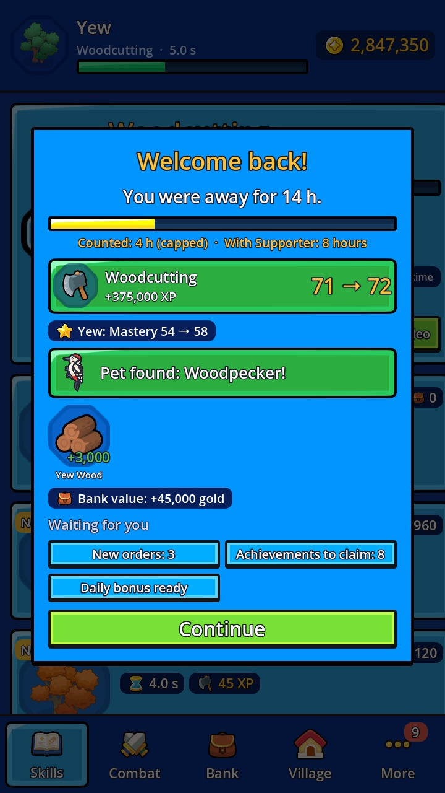
Keeps playing while you're away
Choose an activity and close the game. When you come back, you see exactly what your hero got done: logs, experience, new levels and sometimes a rare pet.
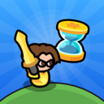
Bannerfall IdleIdle RPG
A relaxed RPG that keeps playing on its own. Your hero chops trees, mines ore, forges swords and fights monsters – even while your phone is in your pocket.
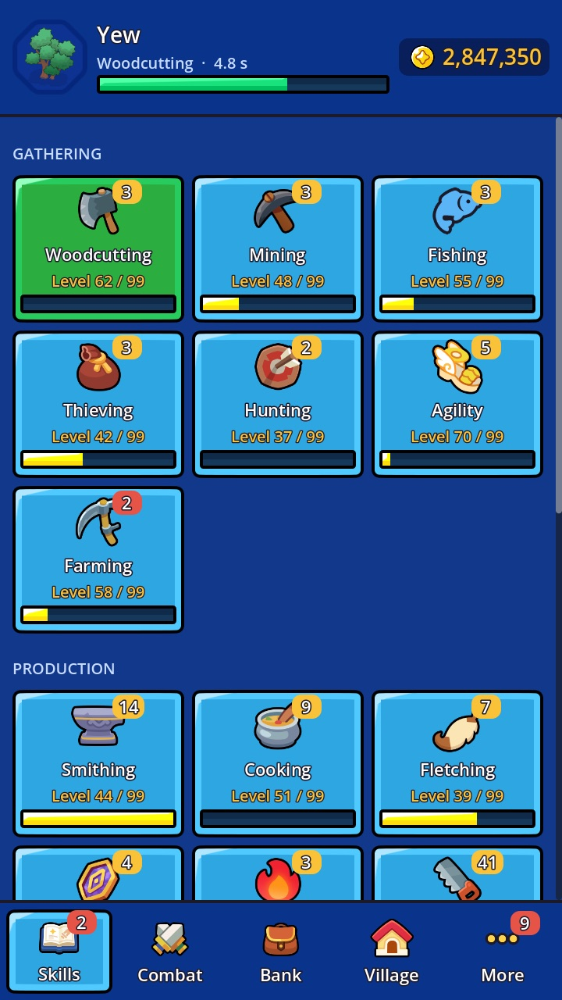
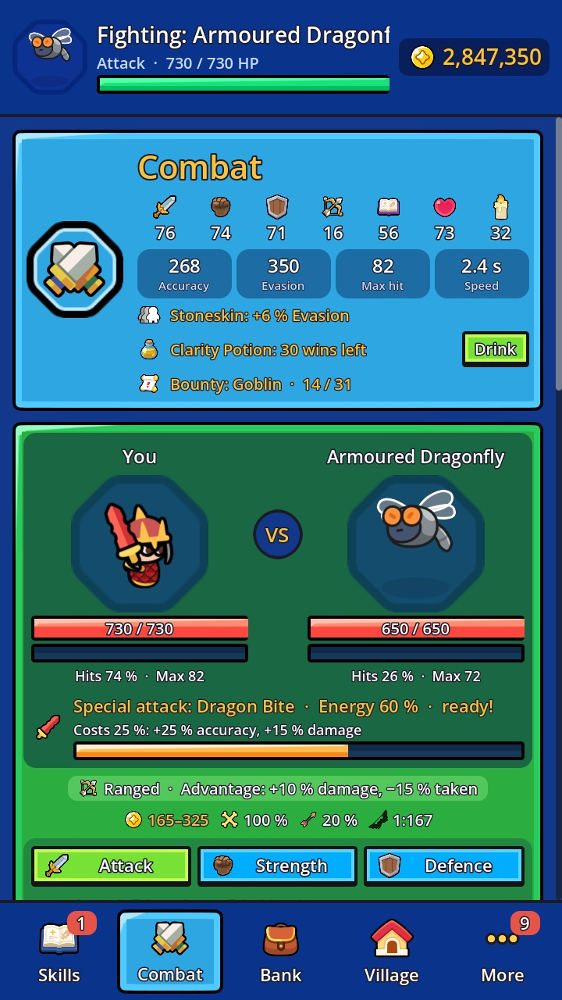
Woodcutting, fishing, smithing or a fight – one tap and your hero gets to work.
Your hero keeps going while the game is closed: up to 4 hours, 8 with Supporter.
Collect your loot, level up, forge better gear and unlock new areas.

Choose an activity and close the game. When you come back, you see exactly what your hero got done: logs, experience, new levels and sometimes a rare pet.
Woodcutting, Mining, Fishing, Hunting, Thieving and Agility bring in resources. Smithing, Cooking, Fletching, Runecarving, Crafting and Herbalism turn them into gear, food, arrows, runes and potions. Every target has its own mastery that makes it faster over time.
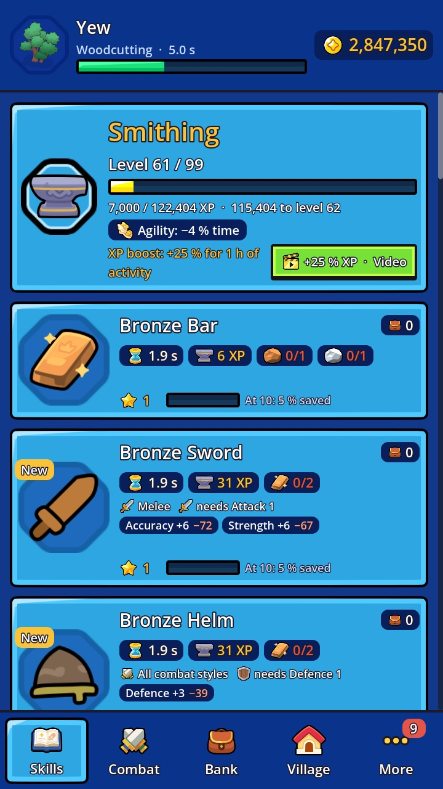
Ore becomes bars, bars become swords, helmets and armor. Every metal is stronger than the last, and growing mastery saves you materials.
Three combat styles that beat each other. Fight 41 monsters across twelve areas, charge up special attacks and take on bounties. Pack food and potions and your hero fights on even offline.
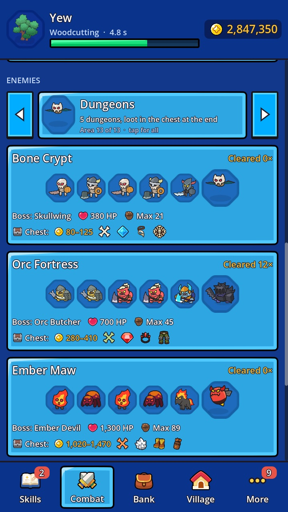
Five dungeons with a boss and a chest at the end, plus mighty bosses that drop rare boss pets of their own.
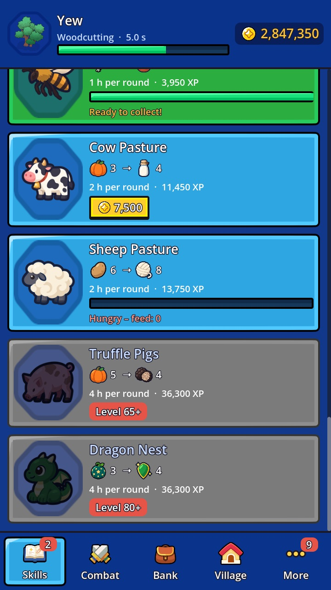
Grow herbs and vegetables on the side, keep bees and silkworms, and harvest whenever you drop by.
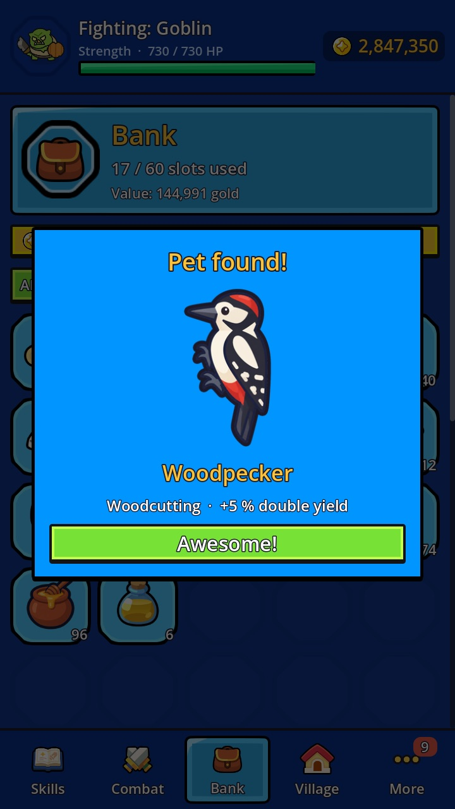
26 pets, each with its own bonus. They turn up rarely while you chop, fish or fight – even while you're offline.
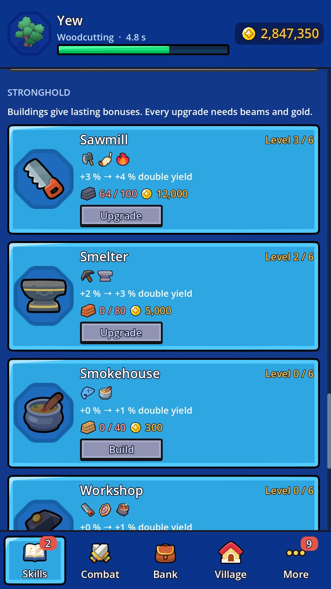
Upgrade the sawmill, the smelter, the storehouse and more. Every building of your stronghold grants lasting bonuses.
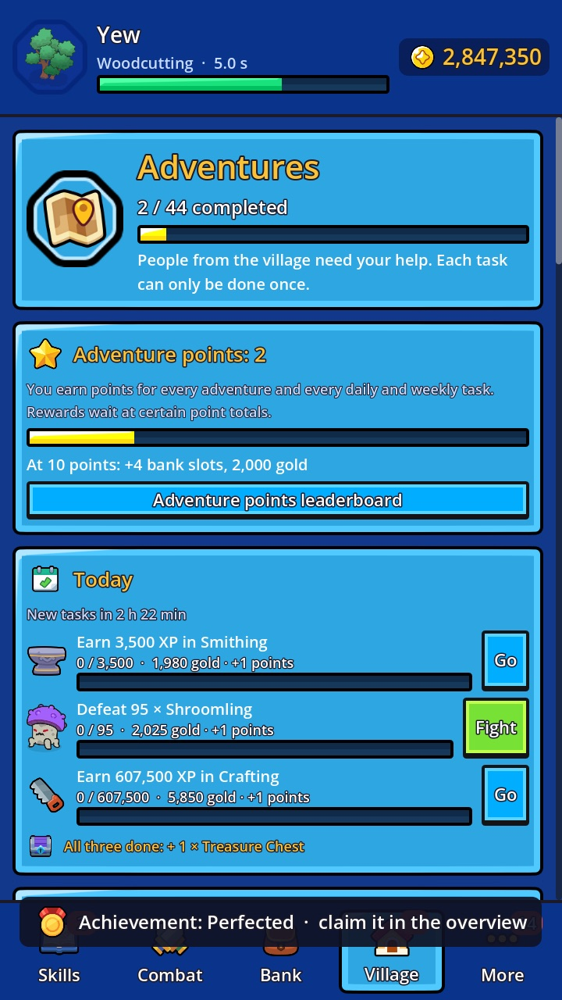
44 adventures from the people of the village, orders to deliver, achievements and a collection book with 283 items.
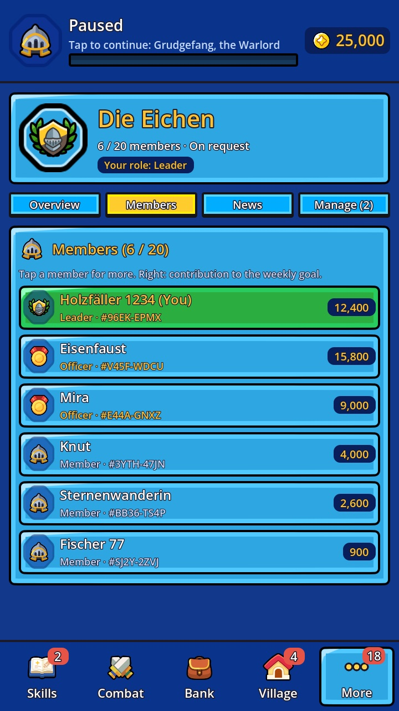
Found a guild or join one. Together you reach the weekly goal, beat the guild boss and storm the raid. Leaders and officers invite players and manage the members.
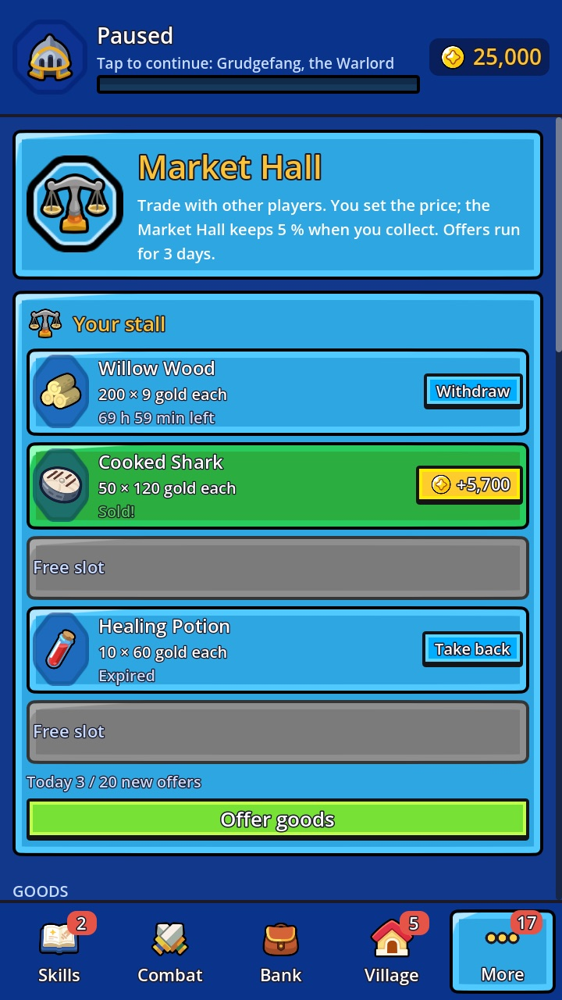
Offer your goods to other players and set your own price. Sold items turn into gold, waiting for you to collect.
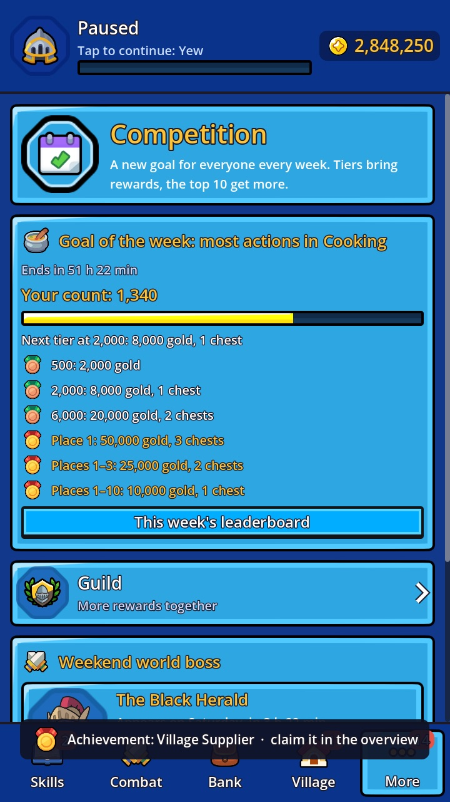
A new goal for everyone each week, with rewards and a leaderboard. On weekends all players fight the world boss together, and you can cheer on your friends for bonus experience.
Every skill, area and boss can be reached without paying.
Videos only when you start them, for example for an experience boost.
Play as long as you like – or not at all for a while.
Cloud backup and a code to move your progress to a new phone.
Bannerfall Idle is about to start testing on iPhone and Android. Pick your phone – your feedback shapes the game.
The public TestFlight link is on its way. Send a short email and you'll get it first.
Sign in with the Google account you use on Google Play and tap “Join group”. Already in the Bannerfall group? Then you're set.
Tap “Become a tester” on the page that opens.
Please stay in the test for at least 14 days.
A game that keeps going without you. You decide what your hero does, and they keep doing it while the app is closed. Check in for a minute or play for an hour – both work.
We're about to start the beta on iPhone (TestFlight) and Android (Google Play). The release follows once the feedback is in.
It comes from the same developer and shares the look, but it's a game of its own with its own progress. You don't need Bannerfall to play it.
No. Bannerfall Idle is free. The optional one-time “Supporter” purchase extends offline time to 8 hours and adds a few comforts, but everything can be reached by playing.
English and German. The game follows your device language and can be switched in the settings.
Bannerfall Idle is an indie game by Jakob Ehmann from Austria.
Join the beta on iPhone or Android. Your feedback shapes the game.
Join the betaAlso by us: Bannerfall: Tiny Battle, a lane battle game with 22 units.